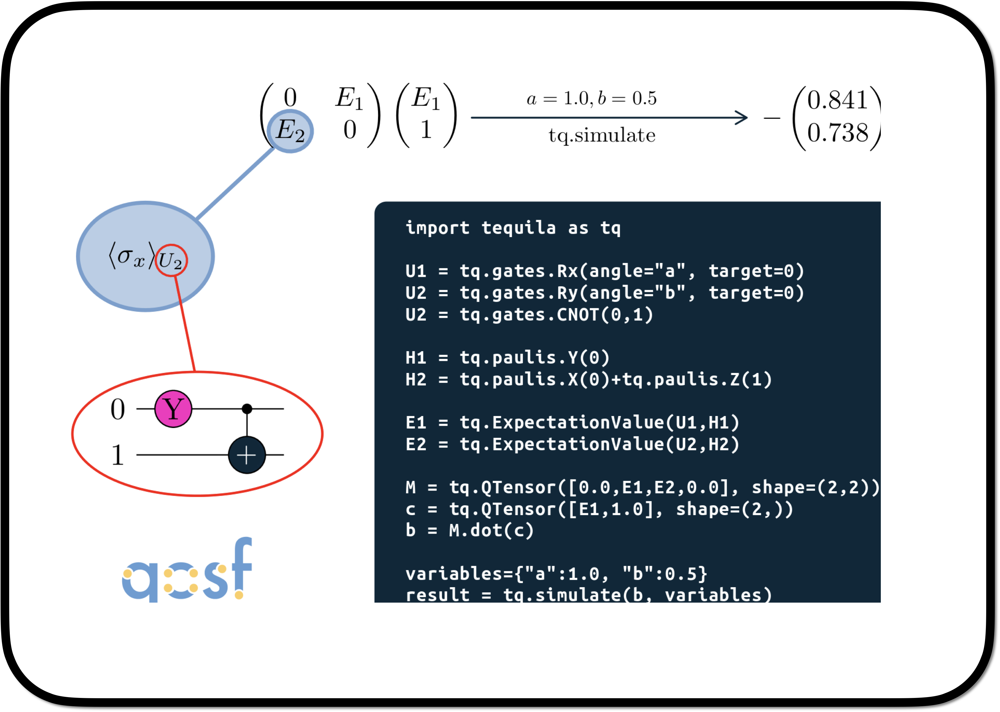

Tequila Tutorials
Research
Tutorials
FAQ
Contribution
Tutorials
Quantum Computing, Quantum Chemistry and Tequila
Categories
All
(9)
code
(9)
Tequila Basics: Getting Started
code
Tequila is a versatile framework for the development…
Nov 3, 2022
Jakob Kottmann
Tequila Basics: Circuits
code
In this tutorial, you will get a brief introduction to tequila circuits.
Nov 4, 2022
Jakob Kottmann
Circuit Compiler
code
A short tutorial on Gate Generators and Tequila’s compilation procedure
May 20, 2024
Georgios Tsilimigkounakis, Adapted by Ram Mosco
Braket Module
code
This is a tutorial to get to know the new Tequila’s function: braket.
Jun 21, 2024
Francesco Scala, Adapted by Ram Mosco
OpenQASMConversions
code
In this tutorial, we’ll introduce OpenQASM, a key language for quantum programming and its use within IBM’s Qiskit framework.
Jun 21, 2024
Claudia Zendejas-Morales, Adapted by Elisabeth Welizky

QTensor
code
This tutorial introduces you to the QTensor class using which you can form vectors, matrices, or tensors whose…
Jun 21, 2024
Gaurav Saxena, Adapted by Elisabeth Welizky
Optimizer
code
Explore the two different optimizers available through Tequila interfaces:
A native gradient descent (GD) optimizer, as well as interfaces for SciPy optimizers.
Jul 5, 2024
Sumner Alperin, Adapted by Thuy Truong
Krylov Method with Tequila
code
In this tequila tutorial you can learn how to apply the
Krylov method
to approximate the ground state of a given Hamiltonian.
Jul 12, 2024
Francesco Scala, Adapted by Thuy Truong
Adaptive Methods in Variational Quantum Algorithms
code
This notebook explores the implementation of adaptive quantum algorithms using the Tequila library, focusing on variational quantum eigensolvers (VQE).
Aug 15, 2024
Korbinian Stein, Adapted by Thuy Truong
No matching items